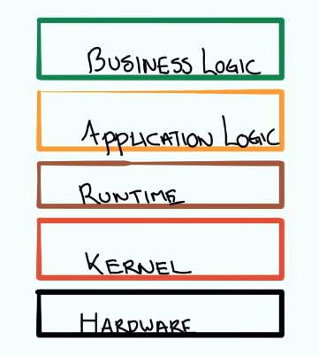
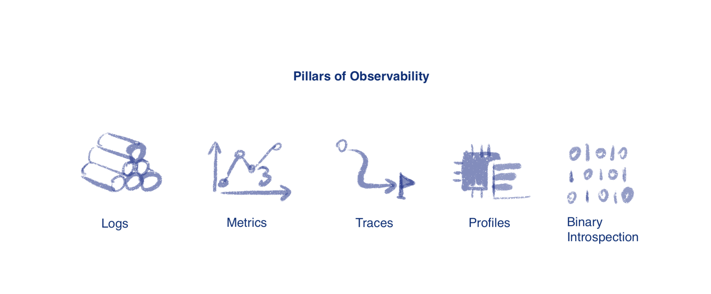
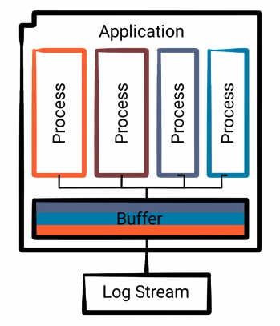

Observability
Understanding observability¶
Goal: to identify/debug the Problem
Observability: How well you can reason through the software state by using telemetric outputs.
"遥测" (telemetry) refers to the collection and transmission of data from remote sources, while "输出" (outputs) denotes the data that is generated and provided by the system.
Nowaday, Microservice is the trend. However, they also create a much more complex and diverse software architecture - since there are not so much central governance of these systems.
➡️ ➡️ ➡️ The system has become more complex, therefore we need Observability
What are we observing?¶
Taking e-commerce shop as example. When a customer places an order, the system checks if the product is in stock, if the payment method is valid, and whether the customer has provided all necessary information (e.g., shipping address).
- Business Logic: The number of validation failures and the average time taken for validation checks.
- Application Logic: how many Http requests
- Runtime: if the App is writen in Go, how much time it spends in Garbage collection
- Kernel: how is the CPU and memory utilization
- Hardware: The temperature of the CPU, or the speed of the fans

Problem Types¶
- Known Known: I send a request to a server and get a 503, I know the app is unavailable.
- Known Unknown: I send a request to a server but it doesnt work, I have the hypothesize that the application is attempting to write to disk, but the disk is full - but we cannot validate this as we have no telemetry on the disk.
- Unknown Unknown: we've validated everything that we can think of. But still couldn't find where the problem is
- Unknown Known: We are sure that the app works, but someons has overridden the DNS record, which points to our service.
Effective Observability¶
A system requires two things in order to be observable:
- The telemetric data: that describe its internal state at some specific time.
- Understanding of the system. E.p. read the code
Pillars of Observability¶

Pillar 1: Logs¶
3 Standard Streams in computer programs: STDIN, STDOUT, STDERR, the STDOUT and STDERR are where the logs are.
Log Components¶
- Trigger Event
- Context: that you want to associate with the Trigger Event
Syslog Severity Levels¶
| Level | Severity | Keyword | Description |
|---|---|---|---|
| 0 | Emergency | emerg | System is unusable |
| 1 | Alert | alert | Action must be taken immediately |
| 2 | Critical | crit | Critical conditions |
| 3 | Error | err | Error conditions |
| 4 | Warning | warning | Warning conditions |
| 5 | Notice | notice | Normal but significant condition |
| 6 | Informational | info | Informational messages |
| 7 | Debug | debug | Debug-level messages |
Log Destination¶
- Standard Stream (
STDERR) - File
- Network Socket
- Pipe
Some log Destination may require a single owner process to coordinates:

However, a process will periodically flush these logs to the final destination, but many things might have written records to that buffer in the meantime. ➡️ ➡️ ➡️ This means that as we're actually consuming the logs, they might be in a wrong order.
To be continue: https://ibm-learning.udemy.com/course/practical-introduction-to-observability/learn/lecture/39766470#overview